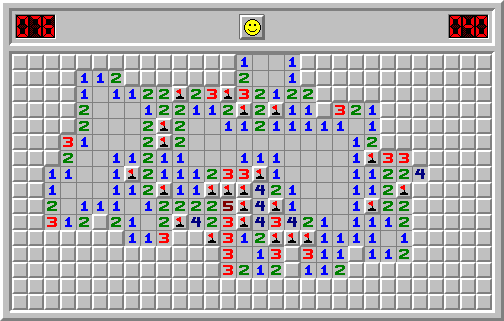
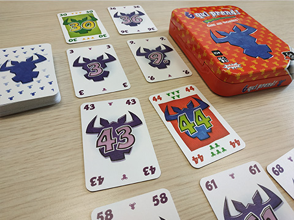
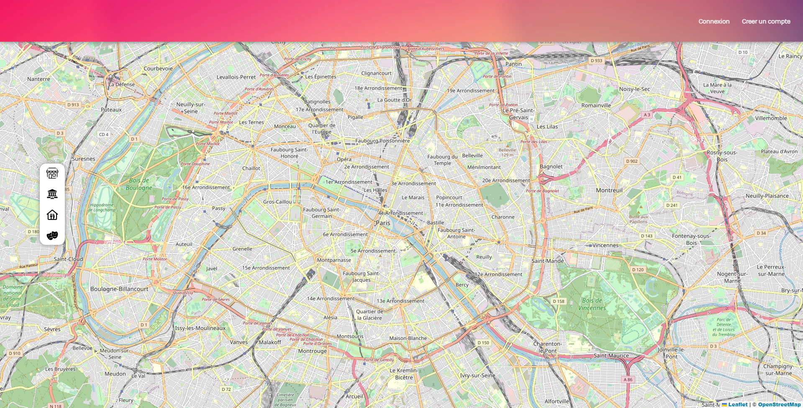

L'objectif de ce projet n'était pas de creer un logiciel permettant de jouer au démineur mais plutôt un logiciel permettant d'analyser une partie déjà en cours (donnée via un fichier texte) et de déterminer si elle est gagnée ou non.
En savoir plus ➝
L'objectif de ce projet était de créer une application java permettant de jouer au jeu de carte "6 qui prend". Il faut indiquer le nom des joueurs dans un fichier texte pour pouvoir jouer. Si vous ne connaissez pas les regles du jeu, elles sont simples, les voici :
En savoir plus ➝Contrairement au démineur réalisé en C++, le but de ce projet était de créer une application en Virtual Basic reproduisant le jeu Démineur. L'application permet aussi d'enregistrer les scores des joueurs et de les consulter tel un classement.
En savoir plus ➝
L'objectif de ce projet réalisé en milieu de seconde année est de réalisé un site internet avec une page de connexion/création de compte et une page utilisant une carte intéractive liée à une base de données. Avec mon groune nous avons choisis de réaliser un site ou les utilisateurs peuvent ajouter et noter sur une carte les endroits du monde (restaurant, monument, musées...) s'il sont connectés au site.
En savoir plus ➝